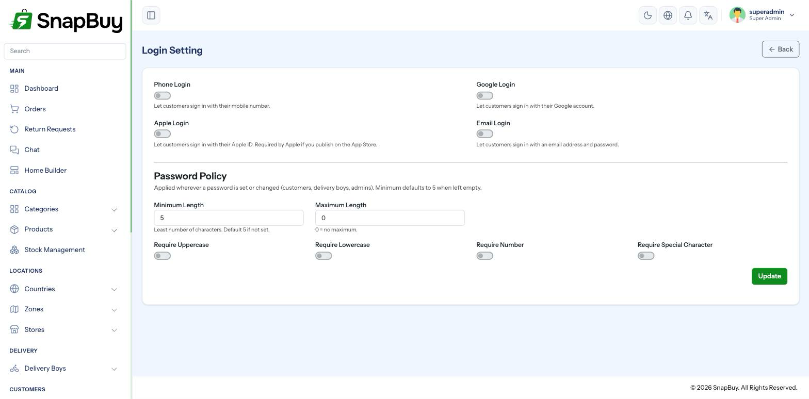
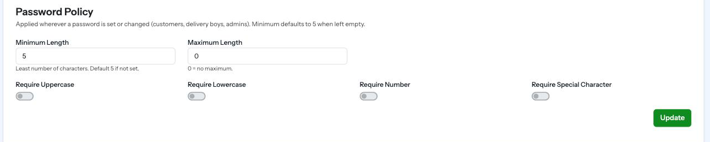

Login Settings
Menu path: Settings → Login Settings
Decides how customers sign in, and the password rules they must meet.

Test every change on a real device before leaving this page
A wrong combination here locks out your entire customer base at once, with no error the customer can act on. Sign in yourself after every change.
Login methods
| Method | What it does |
|---|---|
| Phone Login | Sign in with a mobile number |
| Google Login | Google account sign-in |
| Apple Login | Apple ID sign-in |
| Email Login | Email address and password |
At least one of Phone or Google must stay enabled
SnapBuy refuses to save with both disabled: "At least one of phone login or google login must be enabled." Email and Apple alone are not accepted as the only routes in.
Apple sign-in is mandatory for the iOS App Store
If your iOS app offers any third-party sign-in — Google, Facebook — Apple's review guidelines require Apple Sign-In as well. Omitting it is a common rejection reason.
Phone login — how the OTP is sent
With Phone Login on, choose how the verification code is delivered:
| Option | Sends OTP via |
|---|---|
| Firebase Authentication | Google Firebase |
| Custom SMS Gateway (OTP based) | Your own SMS provider — Twilio or 2Factor |
One of the two is required
Enabling phone login with both disabled fails validation: "When phone login is enabled, either Firebase Authentication or Custom SMS Gateway OTP Based must be enabled."
If you disable Firebase Authentication, configure SMS Settings first — otherwise phone login stops working the moment you save.
Choosing between them
| Firebase | Custom SMS gateway | |
|---|---|---|
| Setup | Already done if you followed Firebase Settings | Twilio or 2Factor account needed |
| Cost | Free allowance, then per-verification on the Blaze plan | Per-SMS at your provider's rate |
| Sender ID | Google's | Your own branded sender |
| Delivery in India | Sometimes unreliable | Usually better with a local provider |
High signup volume in India? Use a local gateway
2Factor and similar Indian providers generally deliver faster and cheaper than Firebase for Indian numbers, and let you use a branded sender ID.
Phone authentication mode
| Option | Customer experience |
|---|---|
| Phone Auth OTP | Enter number → receive OTP → signed in. No password. |
| Phone Auth Password | Enter number and a password |
OTP-only is the lower-friction choice
No password to forget and no reset flow to support. It is what most delivery apps use. Password mode makes sense if customers share a household number and you want a second factor.
Password policy
Applies wherever customers set a password.
| Field | Meaning |
|---|---|
| Min Length | Shortest allowed password. Defaults to 5 if unset. |
| Max Length | Longest allowed. 0 means no limit. |
| Require Uppercase | At least one A–Z |
| Require Lowercase | At least one a–z |
| Require Number | At least one digit |
| Require Special | At least one symbol |

Changing the policy does not invalidate existing passwords
Customers who set a password under the old rules keep signing in with it. The new rules apply only to new passwords and resets. Tightening the policy does not force a reset.
Length beats complexity
A 10-character minimum with no symbol requirement is both stronger and easier for customers than 6 characters with four character-class rules. Heavy complexity rules mostly generate password resets.
Mobile number length
Valid phone-number lengths are not set here — they come from the country record's min and max mobile length.
"Valid customers cannot log in"
When phone login rejects real numbers, the country's length range is nearly always the cause, not this page.
Social login prerequisites
| Method | Also requires |
|---|---|
| OAuth client configured in the Firebase/Google console, with your domain authorised | |
| Apple | Apple Developer account, Sign in with Apple capability, Service ID |
| Phone | Firebase phone auth enabled, or an SMS gateway configured |
Enabling a toggle here does not configure the provider — it only exposes the button.
Troubleshooting
| Symptom | Cause | Fix |
|---|---|---|
| Cannot save the page | Both phone and Google login disabled | Enable at least one |
| Cannot save with phone login on | Neither Firebase auth nor SMS gateway enabled | Enable one of them |
| OTP never arrives | Firebase quota exhausted, or gateway misconfigured | Check Firebase / SMS Settings |
| Google button does nothing | Domain not in Firebase authorised domains | Add it under Authentication → Settings |
| Apple sign-in fails on iOS | Service ID or capability missing | Complete the Apple Developer setup |
| Real numbers rejected | Country min/max mobile length wrong | Fix it on the country |
| Customers cannot set a password | Policy too strict | Relax the requirements |
Checklist
- At least one of phone or Google login enabled
- If phone login is on: Firebase auth or an SMS gateway configured
- Apple sign-in enabled if the iOS app offers other social logins
- Country mobile length range correct
- Password policy achievable
- Signed in successfully with every enabled method on a real device